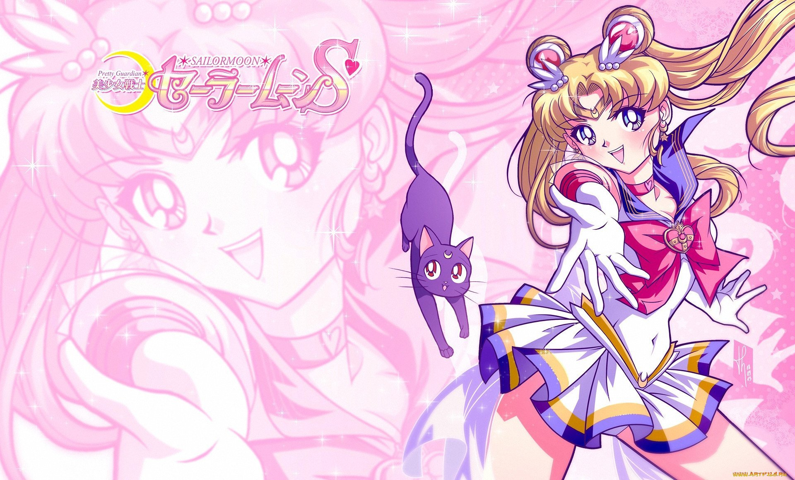

Обо мне
Здравствуйте читали моего интернет-канала! Этот "сайт" был создан для выполнения домашней работе по веб-верстке, которая мне очень нравится.
Расскажу немного моих страницах. Тематика данного сайта состоит на основе аниме-сериала «Прекрасная воительница Сейлор Мун». Я ни разу не смотрела этот сериал. Но он меня очень сильно привлекает своей рисовкой, стилем и конечно же вайбом. Я выделила несколько тематик статей. На самом деле почти все я скопировала на Википедии. Очень удобно. Рассказала о том, что вообще такое Селор Мун, о чем сюжет, рассказала так же о персонажах и конечно же оставила чужую рецензию с какого-то сайта. Дальше я вставлю неотформатированную песенку из этого аниме с помощью тега pre
Лунная легенда
Мне очень жаль, что была груба с тобою…
Готова поделиться с тобой своей мечтою…
Зациклены мысли на одном и никак не забыть…
Хочу прямо сейчас лишь с тобой быть…
Как же хочется плакать мне в лунном свете…
В полночь не позвонить, мой друг лишь ветер…
Что делать мне, коли, душа полна тоской,
И моё сердце как калейдоскоп…
Нам путь укажет этот волшебный лунный свет.
Я столько раз видела его яркий след…
Бесчисленные звёзды, что над нами, скажут, и всю правду нам они расскажут,
Где во вселенной этой, что ищем мы вновь,
Рождённая на земле любовь…
Хочу с тобой в выходные забыть ненастье…
Пошли нам, Бог, настоящее счастье…
Неважно вчера, сегодня или завтра…
Люблю тебя и это правда…
Когда впервые увидела я тебя тогда,
Твой нежный взгляд забыть не смогла…
Средь бесчисленных звёзд, что надо мною,
Найду тебя, став сама звездою…
Меняя совпадения на шансы –
Люблю жизнь нашу и наши романсы…
Волшебная случайность бывало столько раз
Сталкивала для встреч друг с другом нас…
Бесчисленные звёзды, что над нами, скажут, и всю правду нам они расскажут.
Где во вселенной этой, что ищем мы вновь,
Рождённая на земле любовь…
Верю всем сердцем в неё –
В эту чудесную любовь…